この動画で伝える一文
「AIで作った絵が気持ち悪いのはAIのせいだ」と思っている人に、不自然さはゼロからすべてを生成させていることから来ると伝え、手元の70を80〜90へ引き上げる相棒として向き合い、最後の判断と責任は人が持つ、という本人の結論を残す。
残る気持ちは、丁寧に使えばAIは高く返す、という本人の確信です。全員の制作がこれで成功する、という話にはしません。0、70、80、90、100は、どこまで委ねるかの言い方で、品質の測定値ではありません。
視聴者
メニューやポスターをAIに任せ、仕上がりを「なんか気持ち悪い」と言われた人。原因をAIの性能だと思っている人。手元の実物をどこまで渡し、どこから自分で見るかを、自分の頼み方として持って帰れる人。
構成と尺
声は経緯、留保、結論を運びます。文字は決め語と、短い留保です。図は「0から100は折れる」「70から90は伸びる」「90から100は人の手」を運びます。説明の全文は画面に載せません。尺は、生成したナレーションの実測に合わせて決めました（声 741 字、画面の文字 423 字。空白と改行を除く）。
企画時の案からの主な変更：報じられたフロートの例（氷まで、同じ緑）を冒頭の直後へ移し、「なんか気持ち悪い」の中身を先に見せてから原因（ゼロからすべて）へ進みます。画面の出典の一行は出しません。図は、0〜100 の目盛りを床の定規にした一続きの立体の空間で、カメラがその上を飛びます。
| カット | 区間 | 役割 | 声／画面 |
|---|---|---|---|
| 01 なんか、気持ち悪い。 | 0:00.0–0:06.8（6.8秒） | 問い | 36字／10字 |
| 02 氷まで、同じ緑。 | 0:06.8–0:18.8（12秒） | 報じられた例 | 65字／49字 |
| 03 0から100は、崩れる。 | 0:18.8–0:28.6（9.8秒） | 原因 | 53字／34字 |
| 04 70から、90へ。 | 0:28.6–0:38.0（9.4秒） | 根拠 | 45字／30字 |
| 05 濃淡。 | 0:38.0–0:54.8（16.8秒） | 対処 | 81字／43字 |
| 06 嘘が混ざる。 | 0:54.8–1:08.0（13.2秒） | 留保と根拠 | 71字／38字 |
| 07 楽か、質か。 | 1:08.0–1:16.4（8.4秒） | 対比 | 44字／17字 |
| 08 隅は、残る。 | 1:16.4–1:26.0（9.6秒） | 根拠 | 55字／20字 |
| 09 AIのせい、ではない。 | 1:26.0–1:39.4（13.4秒） | 主張 | 73字／48字 |
| 10 離れていく。 | 1:39.4–1:56.4（17秒） | 留保 | 95字／63字 |
| 11 そこに、行った価値。 | 1:56.4–2:04.0（7.6秒） | 留保 | 43字／26字 |
| 12 相棒として。 | 2:04.0–2:22.0（18秒） | 本人の結論 | 80字／45字 |
| 13 エンドロゴ | 2:22.0–2:27.3（5.3秒） | 制作表示 | 0字／0字 |
カット表（完成した本編のコマ）
各カットのコマは、完成した本編（video/out/final.mp4）から切り出したものです。番号はこのページの見出しにだけあり、映像の中にはありません。企画時の絵コンテ（構図のラフ）は assets/storyboard/ に残しています。動きの用語は動きの言語、記号の意味は記号と色を参照します。
動きの軸は、床に置いた 0〜100 の目盛りです。0 から 100 へ走る矢印は進むほど折れ、100 の先のグラスが崩れます。70 に置いた実物のグラスは、滑らかな青い矢印で形を保ったまま 90 へ運ばれます。最後に、90 から 100 の空きへ「人の手」の帯が落ちてはまり、グラスにさくらんぼが乗ります。
なんか、気持ち悪い。
0:00.0–0:06.8 / 6.8秒 ・ 問い ・ 声 36字／画面 10字

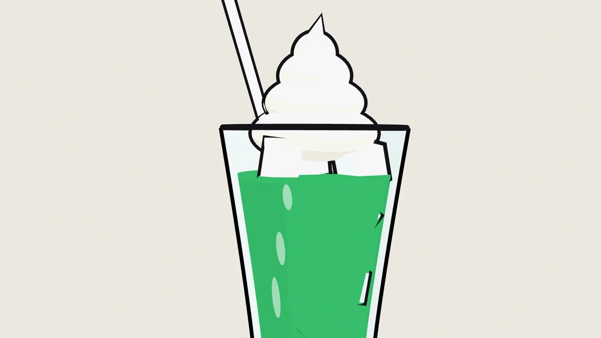

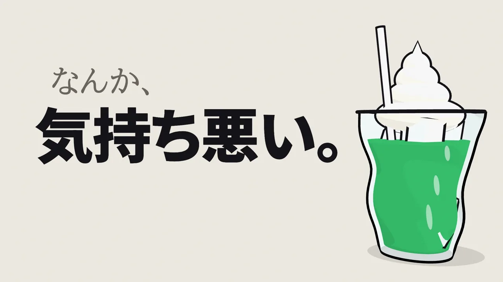
なんか、
気持ち悪い。
メニューの写真を見て、「なんか気持ち悪い」と思ったことは、ありませんか。
「気持ち悪い。」を墨の特大で左に置く。グラスはカメラの振りで右へ逃げ、語に場所を空ける。正体はまだ言わない。
グラスの正面へ振って、02 の「メニューの画像」に入る。
氷まで、同じ緑。
0:06.8–0:18.8 / 12秒 ・ 報じられた例 ・ 声 65字／画面 49字

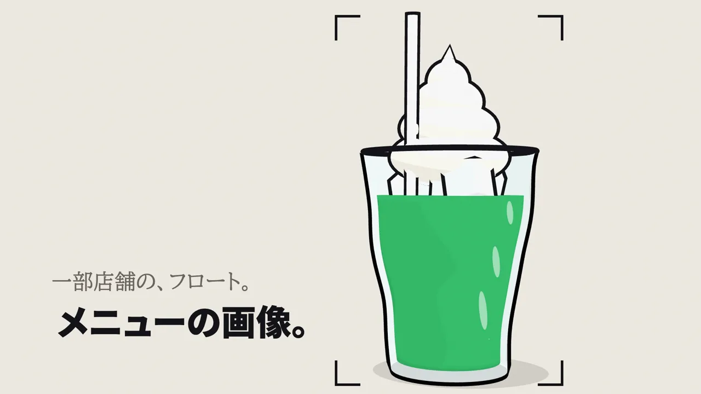

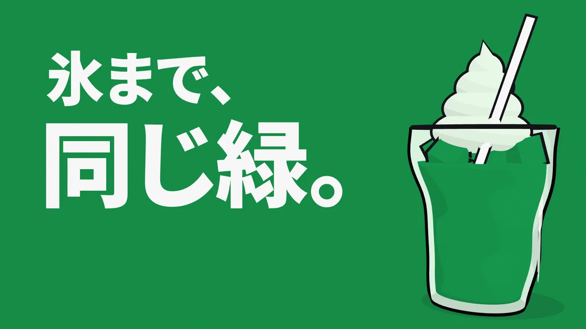
一部店舗の、フロート。
メニューの画像。
生成AIで、作られた。
氷まで、
同じ緑。
ゼリーのような、つや。
ケンタッキーが一部の店舗で出した、フロートのメニュー画像。生成AIで作られ、氷までソーダと同じ緑に染まっていた、と報じられました。
主役は「同じ緑。」。氷・液・画面の地が同じ色になることで、語の意味をそのまま見せる。他者の画像・ロゴ・出典の表示は出さない（ブランド名は声だけ）。
緑が上へ抜け、カメラが引いて目盛りの全景になる。
0から100は、崩れる。
0:18.8–0:28.6 / 9.8秒 ・ 原因 ・ 声 53字／画面 34字

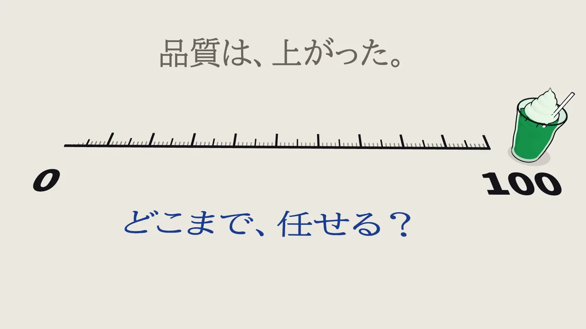

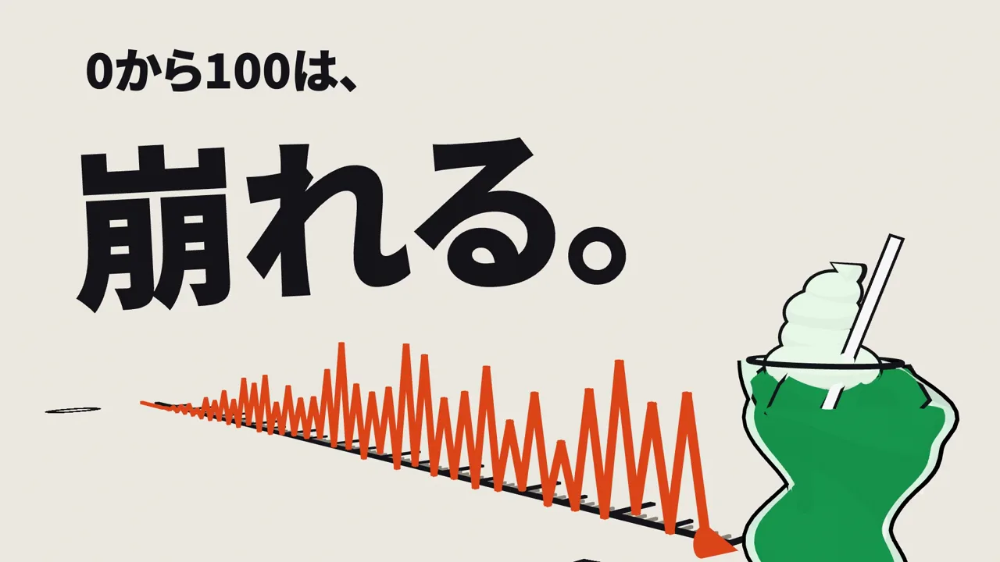
品質は、上がった。
ゼロから、
すべてを、
生成。
0から100は、
崩れる。
AI画像の品質は、一気に上がりました。それでも不自然になるのは、ゼロからすべてを、生成させているからです。
「崩れる。」を最大級の墨で。留保「品質は、上がった。」は明朝の灰で先に置く。矢印とカメラが並走し、語は走りに合わせて一つずつ入る。
折れた線が倒れ、70 の位置へカメラを振る。
70から、90へ。
0:28.6–0:38.0 / 9.4秒 ・ 根拠 ・ 声 45字／画面 30字

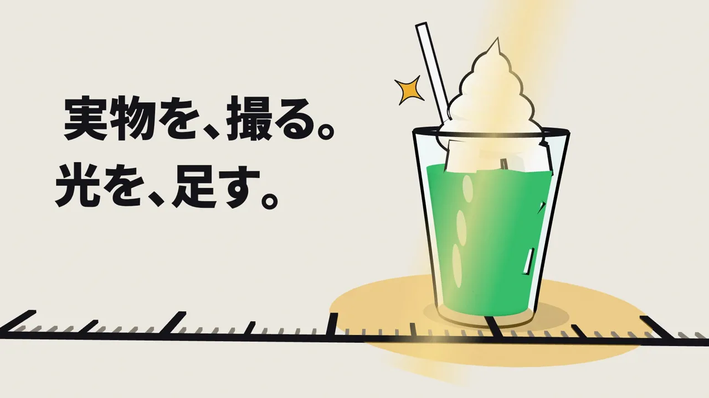

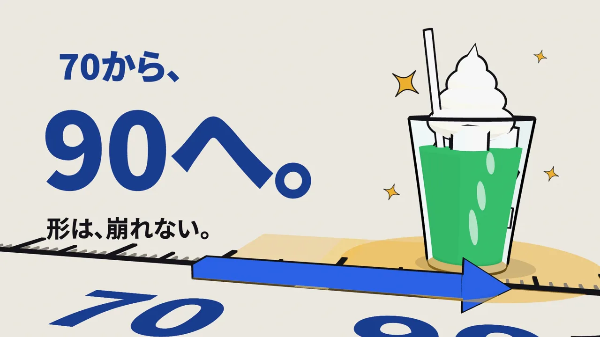
実物を、撮る。
光を、足す。
70から、
90へ。
形は、崩れない。
広告のプロは、実物を撮って、そこに光を足します。実物の写真を渡せば、形は大きく崩れません。
「90へ。」を藍の特大で。03 の折れた朱の線に対して、太く滑らかな青い矢印と金の光で対比する。
引いて、目盛りの上の帯の話へ。
濃淡。
0:38.0–0:54.8 / 16.8秒 ・ 対処 ・ 声 81字／画面 43字

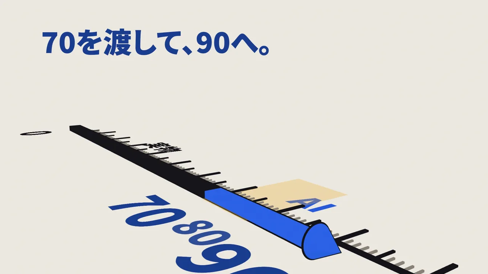

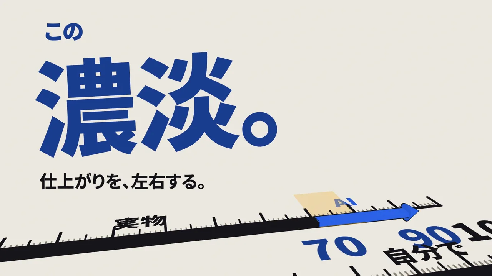
丸投げ、
しない。
70を渡して、90へ。
残りは、自分で。
この
濃淡。
仕上がりを、左右する。
0から100まで、丸投げしない。70の実物を渡して、80や90へ引き上げてもらう。あるいは、70まで出させて、残りは自分で直す。この濃淡が、仕上がりを左右します。
墨＝人の側（実物・自分の手）、青＝AI に任せる区間。二通りを同じ大きさの帯で並べ、片方だけを正解にしない。
0 の端（何もない床）へ振る。
嘘が混ざる。
0:54.8–1:08.0 / 13.2秒 ・ 留保と根拠 ・ 声 71字／画面 38字

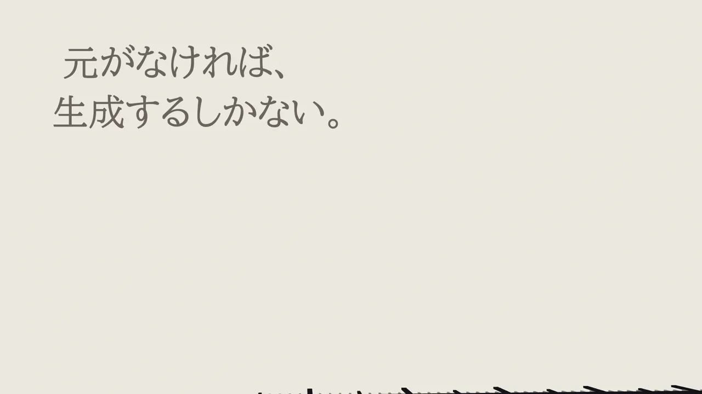

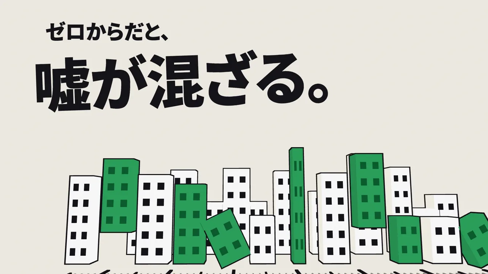
元がなければ、
生成するしかない。
ゼロからだと、
嘘が混ざる。
並びが、デタラメ。
元の画像がなければ、生成するしかありません。ただ、ゼロからだと、現実にない嘘が混ざります。住んでいた香港の風景も、ビルの並びがデタラメでした。
「嘘が混ざる。」を墨の特大で空に置く。緑は 02 と同じ「嘘の色」。実在の街の写真も地名も出さない（香港は声だけ）。
街が沈み、文字だけの場面へ。
楽か、質か。
1:08.0–1:16.4 / 8.4秒 ・ 対比 ・ 声 44字／画面 17字

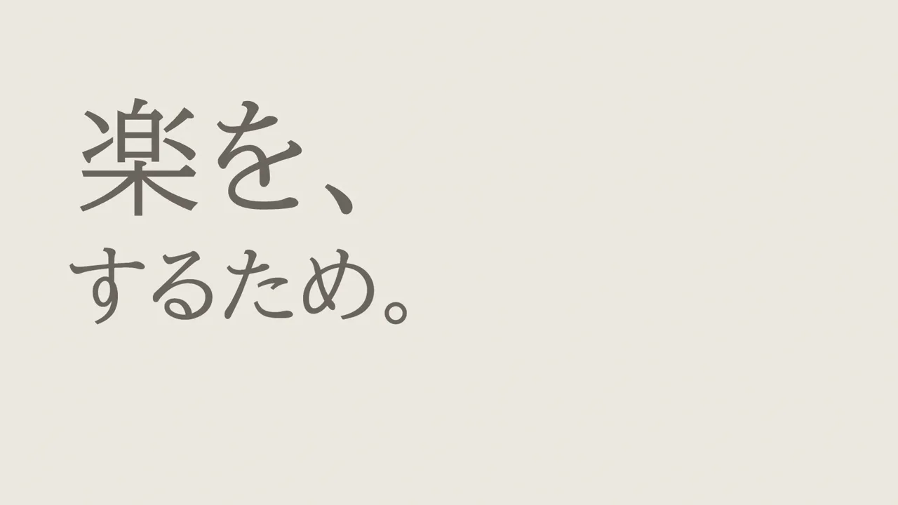

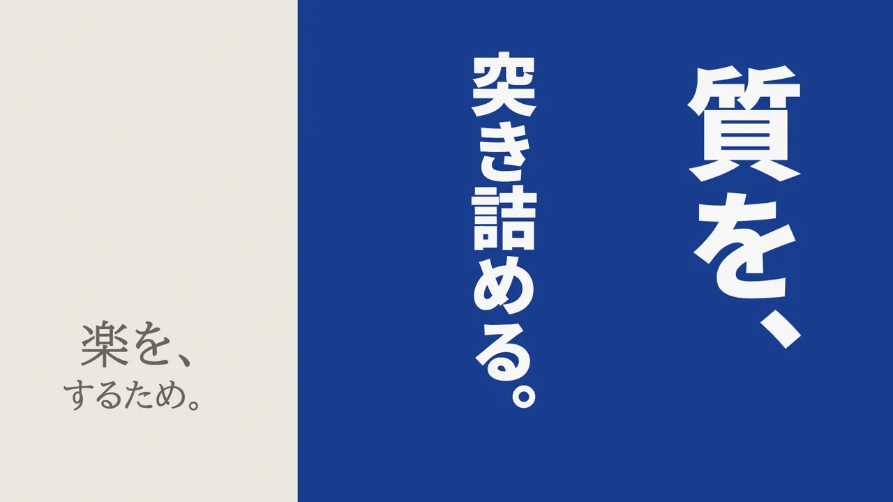
楽を、
するため。
質を、
突き詰める。
下手な人は、楽をするためにAIを使います。使いこなす人は、質を突き詰めるために使います。
図を出さない唯一の場面。横組の明朝（楽）と縦組のゴシック（質）で、向き・書体・大きさ・色をすべて変える。
面が抜けて、部屋へ振る。
隅は、残る。
1:16.4–1:26.0 / 9.6秒 ・ 根拠 ・ 声 55字／画面 20字

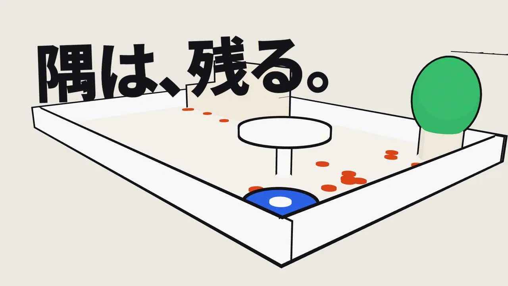

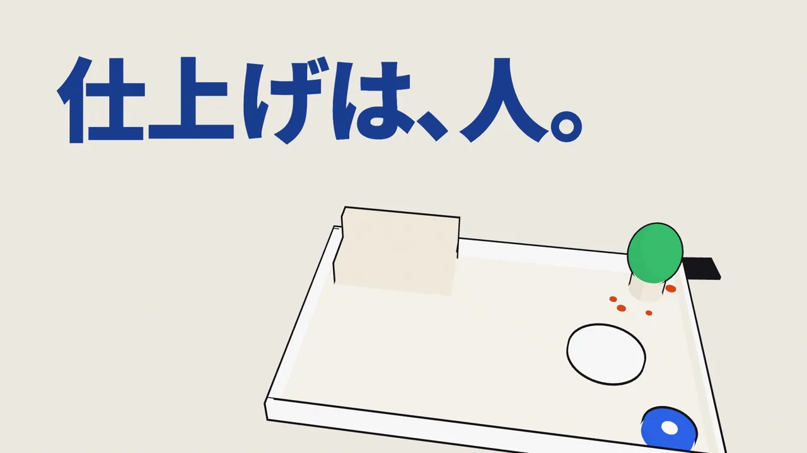
任せきりでは、
隅は、残る。
仕上げは、人。
お掃除ロボットに任せきりでは、部屋の隅にゴミが残ります。浮いた時間で、仕上げに手をかけるから、良くなるのです。
青＝任せた側、墨＝人の手という 05 の色分けをそのまま使う。製品の形・名前・人の姿は出さない。
100 の先の、崩れたグラスへ振る。
AIのせい、ではない。
1:26.0–1:39.4 / 13.4秒 ・ 主張 ・ 声 73字／画面 48字

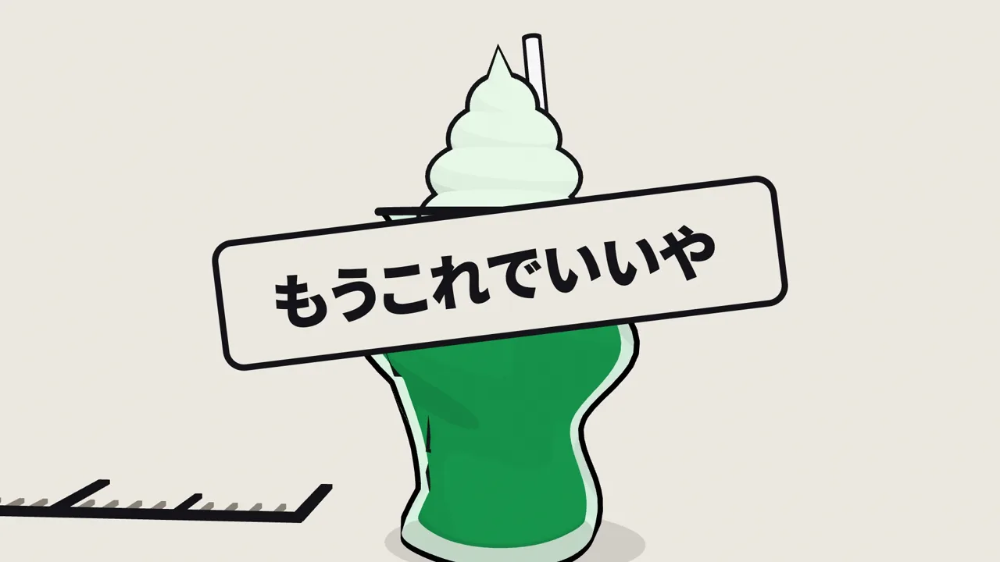

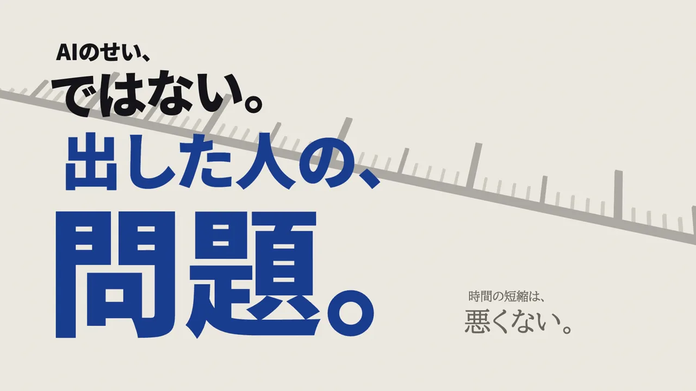
もうこれでいいや
時間の短縮は、
悪くない。
品質が低いのは、
AIのせい、
ではない。
出した人の、
問題。
一発で出して、「もうこれでいいや」。時間の短縮は、悪くありません。けれど、品質が低いのは、AIのせいではなく、出してよいと判断した、人の問題です。
留保を先に大きく読ませてから右下へ縮め、最後まで画面に残す。「ではない。」は一度画面いっぱいに着地してから上段へ縮む。「ダサい」は使わない。
客の点が集まる場面へ振る。
離れていく。
1:39.4–1:56.4 / 17秒 ・ 留保 ・ 声 95字／画面 63字

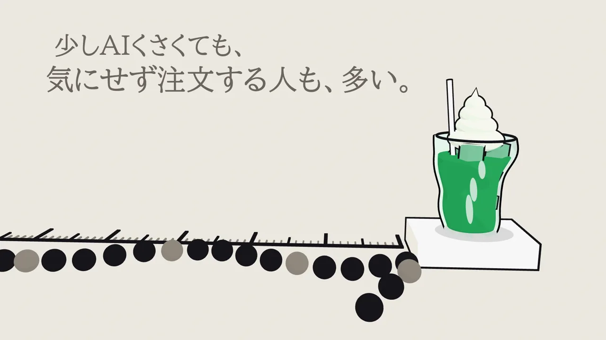

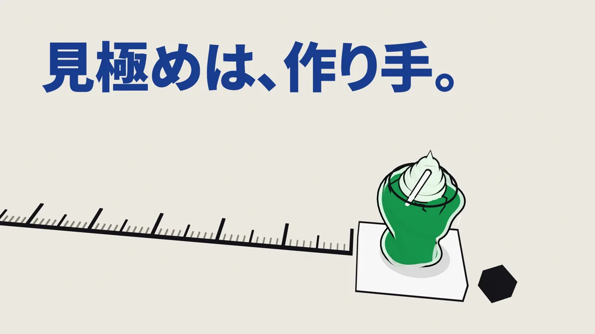
厳しすぎる面も、ある。
少しAIくさくても、
気にせず注文する人も、多い。
手抜きと、受け取られれば、
離れていく。
見極めは、作り手。
もっとも、ネットの反応は、厳しすぎる面もあります。少しAIくさくても、気にせず注文する人は多いはずです。それでも、手抜きと受け取られれば、お客さんは離れていきます。見極めるのは、作り手です。
留保（灰・明朝・中くらい）と「離れていく。」（墨・ゴシック・大）で大きさに差をつける。点は顔も人の形も持たない。
二枚の額へ振る。
そこに、行った価値。
1:56.4–2:04.0 / 7.6秒 ・ 留保 ・ 声 43字／画面 26字

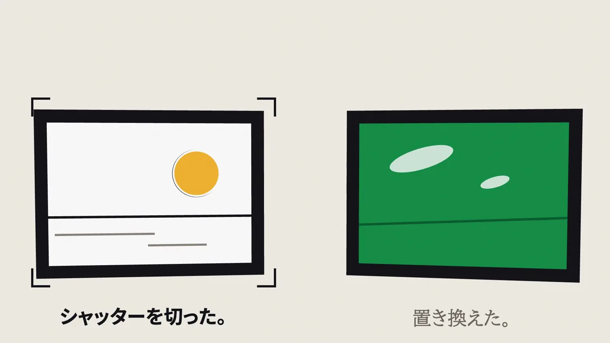

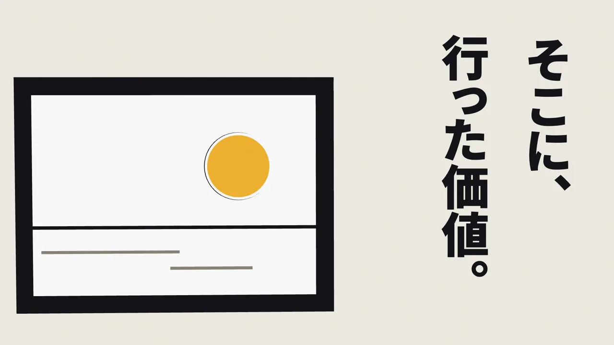
シャッターを切った。
置き換えた。
そこに、
行った価値。
旅先でシャッターを切った、思い出の写真は、AIの画像に置き換えても、意味がありません。
写真そのものは見せず、残る額と倒れる額で「置き換えても意味がない」を示す。
目盛りの 90〜100 の空きへ振る。
相棒として。
2:04.0–2:22.0 / 18秒 ・ 本人の結論 ・ 声 80字／画面 45字

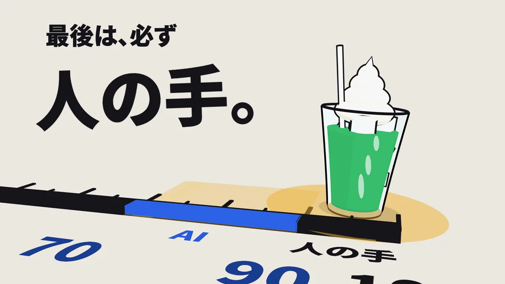

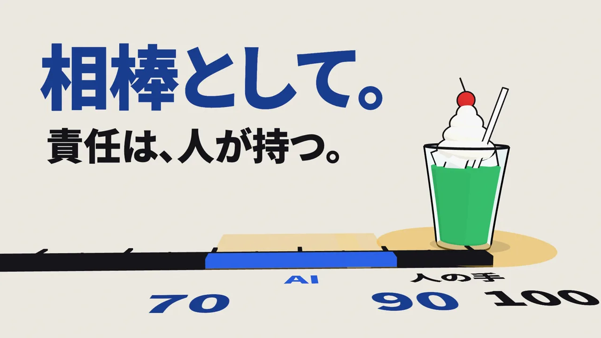
最後は、必ず
人の手。
丁寧に使えば、
高く返す。
70を、
90へ。
相棒として。
責任は、人が持つ。
私も、最後は必ず、人の手で編集を入れます。丁寧に使えば、今のAIは、驚くほど高く返してくれます。手元の70を、90へ引き上げる相棒。最後の責任は、人が持ちます。
「相棒として。」は筆者の決め語の藍、「責任は、人が持つ。」は人の側の墨。問いかけにせず、言い切りで閉じる。
画面ごと左へ押し出して、ライムのロゴへ。
エンドロゴ
2:22.0–2:27.3 / 5.3秒 ・ 制作表示

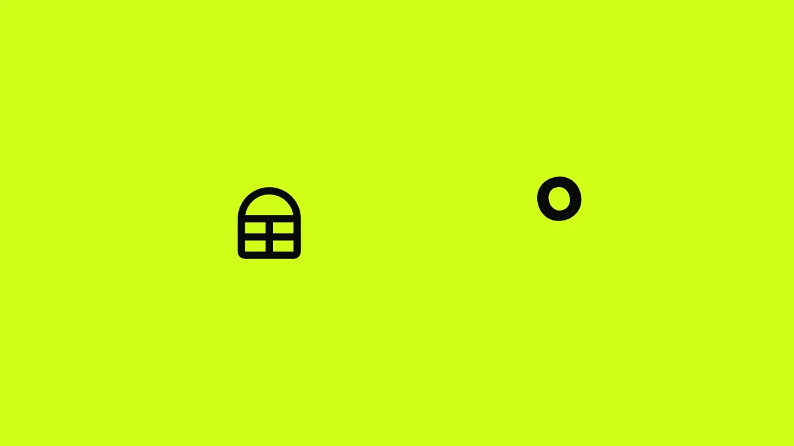

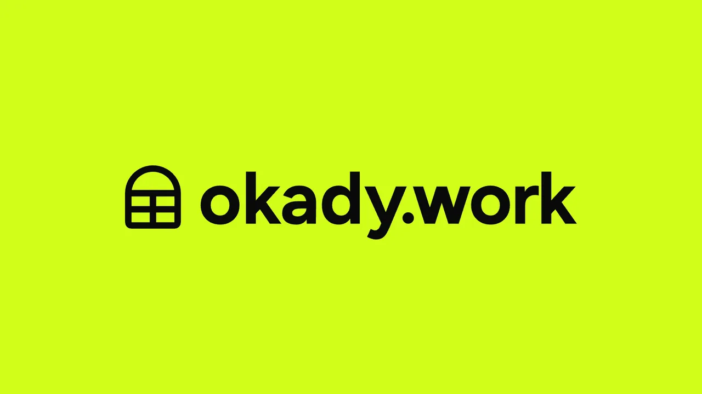
リポジトリ直下の okady-work-logo.svg の動き（0〜2.6秒で o が落ちて弾み定位置へ、2.6〜3.2秒で全体が左へ滑り、3.0〜4.0秒で「.work」が一文字ずつ）をフレーム時刻から再現し、完成形を 1.3 秒保持して終わる。背景は #d2ff1a。
詳細（ここから下は補足）
ここまでで、どんな動画で、どう組み、どう見えるかを示しました。以下は、完成した本編の分担、デザインと動き、記号、素材、音、根拠です。
声・文字・素材の分担
| 担当 | 受け持つこと | 受け持たないこと |
|---|---|---|
| 声 | 経緯、報じられた例とブランド名、プロは実物を土台にするという方法、元がなければ生成するしかないという留保、香港の並び、楽と質、家電のたとえ、短縮は悪くないという留保、厳しすぎる反応と、それでも離れること、思い出、本人の結び。 | 画面の語の読み上げそのもの。全文字幕。URLの読み上げ。製品の画面の説明。 |
| 文字 | 決め語（ゴシック 900）。留保の短い句（明朝・灰：「品質は、上がった。」「元がなければ、生成するしかない。」「時間の短縮は、悪くない。」「厳しすぎる面も、ある。」「気にせず注文する人も、多い。」）。床の数字と帯の札。 | ナレーションの全文。原稿にない数字。出典の行。 |
| 図（目盛り、グラス、折れた線、帯、街、部屋、点、額） | 0から100は折れること、70から90は伸びること、空きは人の手であること、並びが崩れること、隅が残ること、客が離れること。 | 説明の文。製品の画面。人の姿。他者の写真。 |
| 画像・動画ファイル | 使わない。原稿内のイラストと生成動画も使っていない。 | メニュー写真、投稿、記事の紙面、生成動画。 |
声は生成したナレーション（12 区切り）で、各カットの尺は声の実測に合わせています。画面に声の全文は足していません。
主張・根拠・留保の対応
| 役割 | 内容 | カット |
|---|---|---|
| 主張 | 不自然さはAIのせいではない。ゼロからすべてを生成させていることが原因で、最後の判断と責任は人が持つ。 | 03、09、12 |
| 根拠 | 報じられたフロートは、氷まで同じ緑だった。実物を土台にすれば形は大きく崩れない。70を90へ上げるか、残りを自分で直す。任せきりでは隅が残る。 | 02、04、05、08 |
| 留保 | 品質は上がっている。元がなければ生成するしかない。楽のための使い方と質のための使い方は違う。短縮自体は悪くない。反応が厳しすぎることもある。少しAIくさくても気にせず注文する人も多い。それでも手抜きと受け取られれば客は離れる。見極めは作り手。思い出は置き換えられない。 | 03、06、07、09、10、11。声にも残す |
| 最後に残す本人の結論 | 丁寧に使えばAIは高く返す。手元の70を90へ引き上げる相棒として向き合う。最後の責任は人が持つ。 | 12 |
冒頭は 01「なんか、気持ち悪い。」、主張の核は 03「崩れる。」と 04「90へ。」、結びは 12 の「相棒として。／責任は、人が持つ。」です。原稿との文言の対応はreferences.mdにあります。
企画側／制作側
| 企画側が渡したもの | 制作側が判断・制作したもの |
|---|---|
主張と留保、構成・尺・文言の参考案、ナレーション案、絵コンテ 26 枚（assets/storyboard/）、字組みと色の参考案、動きの狙い、効果の参考（effects-direction.md）、ロゴ、根拠の対応 | 構成の組み直し、文言とナレーションの確定、図の立体化、字組み・配色・動き、実装、文字の検査、ナレーションの生成、BGM・効果音、ミックス、書き出し（production-report.md） |
| 画像・動画の採用ファイルはなし | 新しい画像・動画は作っていない（図はすべてコードで描いた） |
デザインシステム（映像の文字・色・グリッド）
本編の見た目です。この企画書のページの色（青と橙の注意色）とは別です。本編でライムは、エンドロゴの背景だけに使っています。
| 名前 | 値 | 使い道 |
|---|---|---|
| 紙 | #f3efe6 | 画面の地（薄い紙の粒を重ねている）。暗い全面にはしない |
| 墨 | #16161a | 事実の語。人の側の図（実物の帯、自分で直す帯、人の手の帯、拭く四角、作り手） |
| 藍 | #1c3f94 | 筆者の決め語（90へ、濃淡、質、仕上げは人、出した人の問題、見極め、相棒）。07 の面 |
| 青 | #2a5fe0 | AI に任せる区間（70→90 の矢印、帯、任せた道具）。文字色は床の札「AI」だけ |
| 灰 | #6f6861 | 留保（明朝） |
| 朱 | #e2471a | 0から100の折れた線、残った埃。文字色にはしない |
| 金 | #f4b532 | 足された光（70〜90 の床、グラスの下、星）。文字色にはしない |
| 嘘の緑 | #17914a | 氷まで同じ色。02 の画面の地、06 の嘘の建物、11 の置き換えた一枚 |
| ソーダの緑 | #35b868 | 実物のソーダ（氷は白のまま） |
| ライム | #d2ff1a | エンドロゴの背景だけ |
書体は二つです。Noto Sans JP 900（事実と決め語）、BIZ UDP明朝（留保）。文字は DOM の層で、詰め組と行のマスクを使っています。図は three.js の層で、面はトゥーンの段階色、輪郭は墨です。安全域は、1920×1080 で左右 80px、上下 64px。
字組みはカットごとに変えています。01 は左の特大と右のグラス。02 は左下の小さい二行から、緑の全面に白の特大。03 は中央上の明朝、左に積む三語、左の最大の語。04 は左の二行から、左の藍の特大と右のグラス。05 は左上の行と、下の帯。最後は斜めの「濃淡。」。06 は左上の明朝二行から、空に置いた特大と下の街。07 は左の明朝の横組と、右の藍の面に白の縦組。08 は左上の語と、右下の部屋。09 は中央の札から、上・中・右下の三段。10 は左上の明朝と、下の点の列、右のグラス。11 は左の額と、右の縦組二行。12 は左上の特大二段と、下の帯、右のグラス。
動きの言語
| 名前 | 本編での使い方 |
|---|---|
| 走る | 0 から 100 へ、矢印とカメラが並んで加速する（03）。完成した 0〜100 を走り抜ける（12）。 |
| 折れる | 走った線が進むほど折れ、折れ続ける。着いた瞬間にグラスの輪郭が大きく波打つ。文字は折らない。 |
| 伸びる | 70 から 90 へ、太い青の矢印が滑らかに進み、グラスを運ぶ。区間の床が金に光る。 |
| はまる | 墨の帯（人の手）が 90〜100 の空きへ落ちて収まる。 |
| 寄る・回る・振る | カメラは図の層だけ。場面の切り替えは速い振り（一方向のぶれ）で、読む間も止めずに流す。 |
| 満ちる | 氷から画面の地まで、同じ緑が下から満ちる（02）。 |
| 流す | 読む間に、行を向きを変えて流す。語の塊は着地のあとも緩く育つ。 |
| 着地 | 決め語の塊が大きく入り、収まる。 |
| 押し出す | 藍の面が右から押し込む（07）。最後は画面ごと左へ押し出してロゴへ。 |
すべての動きは、Remotion 上でフレーム時刻から同じ状態を再現できます。効果の採否はeffects-direction.mdにあります。
記号と色
同じ記号の意味と質感を、全カットで揃えています。
| 記号 | 意味 | 出るカット |
|---|---|---|
| 床の目盛り（0〜100） | どこまでAIに委ねるか。0、70、80、90、100 は原稿の言い方で、測定値ではない | 03、04、05、06、09、10、12 |
| 折れた朱の線 | 0 から 100 の丸投げ。進むほど折れる | 03、05 の頭 |
| 青い矢印・帯と金の光 | 70 から 90。手元の実物を土台に引き上げる | 04、05、12 |
| 墨の帯 | 人の側（実物、自分で直す、人の手） | 05、12 |
| フロートのグラス | メニュー写真のたとえ。全カット同じ立体。波打ちと緑はゼロからの嘘、形を保った光は実物からの引き上げ | 01、02、03、04、09、10、12 |
| 写真の四隅の印 | これは写真（画像）である、撮る | 02、04、11 |
| 嘘の緑 | 氷まで同じ色。現実にない嘘 | 02、06、10、11 |
| 箱の建物 | ゼロから作ると並びがデタラメになる | 06 |
| 部屋・青い円・朱の埃・墨の四角 | 任せきりでは届かないところと、仕上げの手 | 08 |
| 札「もうこれでいいや」 | 一発で出して世に出した印 | 09 |
| 点 | 客のたとえ。姿ではない | 10 |
| 額 | 現地で切った思い出と、置き換えた一枚 | 11 |
| さくらんぼ | 最後の人のひと手間 | 12 |
| ライムの全面 | 制作表示 | ロゴだけ |
キャラ設定
人物は出しません。メニューのたとえはグラス、任せきりのたとえは部屋と青い円、客のたとえは点、人の判断は墨の帯と「人の手」という語です。
素材の採用方針
原稿内のフロートのイラストと生成動画は使っていません。グラスは出るカットのすべてで同じ立体の部品で、輪郭の崩れや色が満ちる変化をコードで描いています。
素材
| ファイル | 用途 |
|---|---|
assets/frames/ の 26 枚 | 完成した本編から切り出したコマ（このページのカット表） |
assets/storyboard/ の 26 枚 | 企画時の構図のラフ（記録） |
assets/fonts/ | Noto Sans JP、BIZ UDP明朝（SIL OFL 1.1、許諾文を同梱） |
assets/logo/okady-work-logo.svg | エンドロゴ。リポジトリ直下の原本の写し。形、色、比率は変えていない |
video/ | 実装、ナレーション音声、BGM・効果音の合成スクリプト、再現手順 |
採用した写真・動画ファイルはありません。
音
- ナレーション：ElevenLabs（
eleven_v4、声 Kouichi）。12 区切りを切らずにそのまま置いています。確定原稿はvideo/audio/narration.json。結びは「最後の責任は、人が持ちます。」 - BGM：この作品用にローカルで合成（120BPM。留保の場面は短調寄りの並び、70→90 と結びは明るい並び）。過去の企画の曲は使っていません。
- アクセント：緑が満ちる、矢印が走って折れる（音程も折れる）、着いた瞬間、70→90 が伸びる（滑らかに上がる音）、「ではない。」「問題。」、人の手がはまる、結び。09 の札のあとに短い間を置いています。
- ロゴ：最後の和音を保持の終わりまで伸ばし、o の着地と「.work」に小さな音を置いています。
- ミックス：BGM は −8 dB、声のある間はさらに −9 dB。全体は約 −14 LUFS。試聴は未確認です。
根拠
原稿の抜粋、画面文言、出典、画面にしない情報、数字が何の指標かはreferences.mdにまとめています。0、70、80、90、100 は、どこまで委ねるかの言い方です。品質スコアや件数は足していません。他者の画像、投稿の文面、記事本文は転載していません。
完成条件・確認状態
本編の映像、ナレーション、BGM、効果音は制作済みです。完成版は video/out/final.mp4（1920×1080・30fps・2:27.3、Git 管理外。video/README.md の手順で再出力できます）。何を変えたか、検査の結果、確認した範囲は production-report.md にあります。
- 文字の検査：全編を 0.25 秒ごと＋各カット境の前後（639 コマ）。安全域は左右 80px・上下 64px。止まっている文字のはみ出し・重なりは、直したあとの再検査で 0 件です。着地・退場の途中の出入りは別に数えています。
- 映像：全編を 1 秒間隔の連続コマで通して見て、構図と重なりを直しました。動きの速い区間は 0.2 秒間隔で見ています。
- 未確認：等速での再生と、音の試聴（制作環境ではできない）。動きの速さの体感、読む時間、曲と声の聴こえ方は、見て・聴いて判断してください。
- 章表示、テロップ帯、制作管理番号、エンドクレジット、出典の行、白フラッシュ、意味のない粒子は入れていません。最後はライムの上のロゴだけです。
完成の条件は、主張が原稿を知らない視聴者に伝わること、留保が声か画面に残ること、結びが本人の肯定であること、文字が安全域に残ること、0から100の折れと70から90の伸びが等速で区別できることです。